I am extremely fond of painting and sketching. I enjoy putting my imagination onto the canvas, sometimes with colors and sometimes without them. This page displays a few of my master pieces.
| 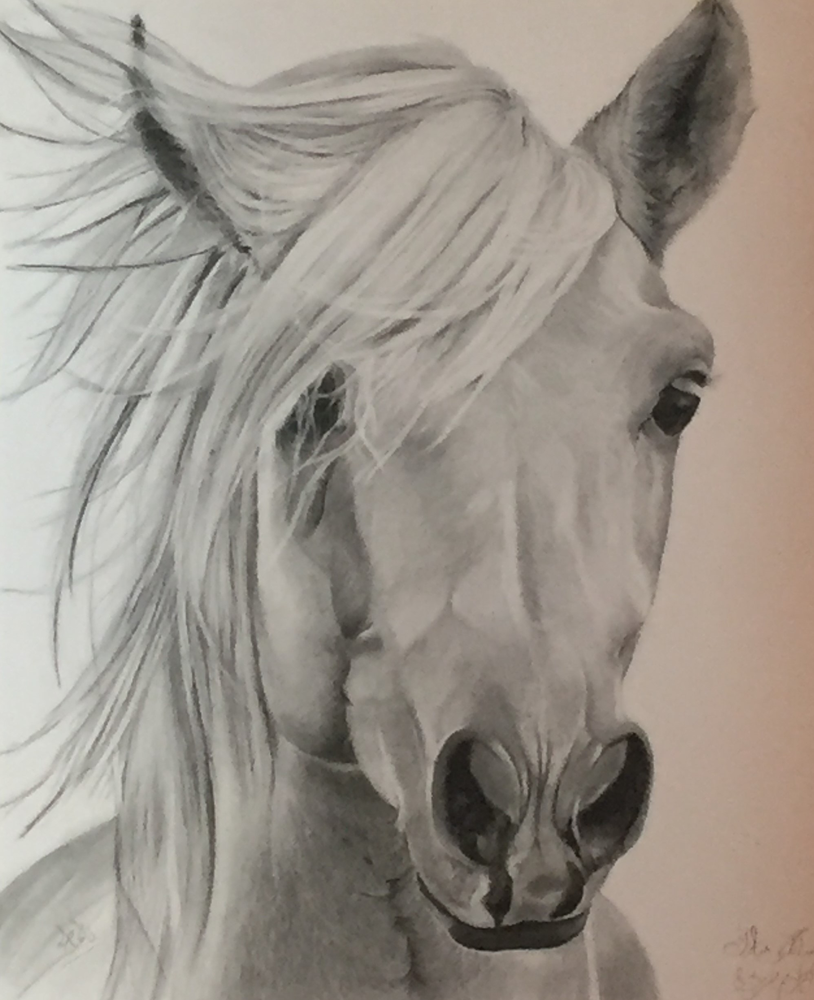 |
Horse This is a detailed sketch of a horse made using pencils, charcoal, and eraser. |
| 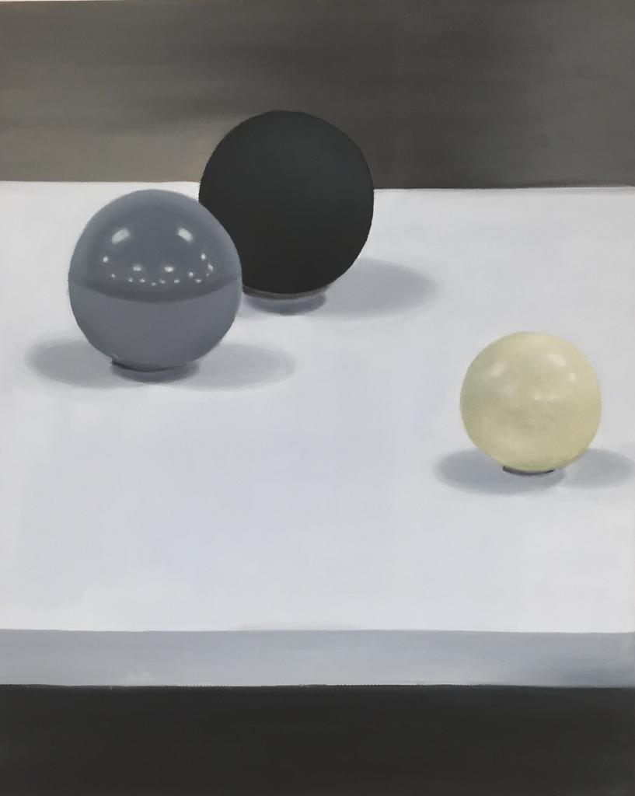 |
Still Life painting This is a still life painting in the shades of gray, black and, white. I made it using oil paints on a 16x20 canvas. |
| 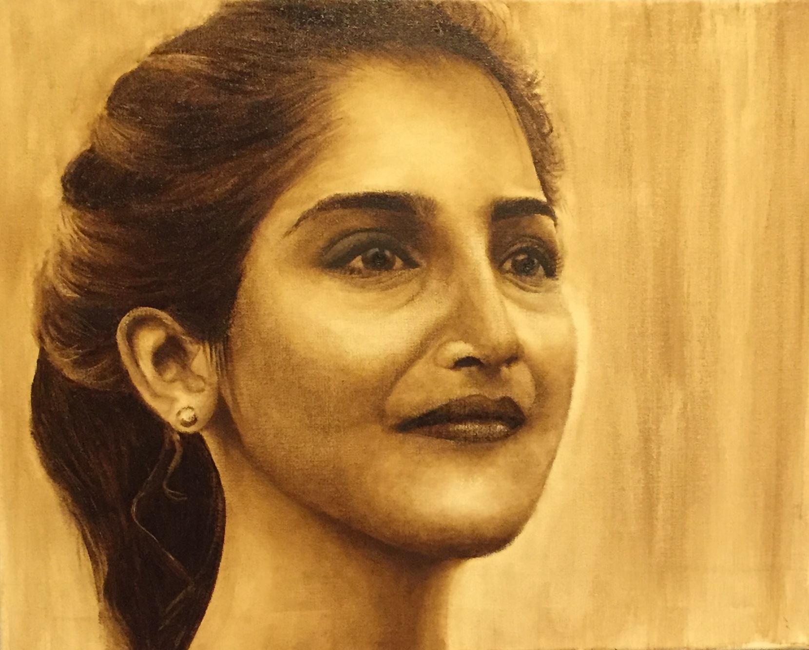 |
Grisaille Self Potrait This is a self potrait made using burnt amber oil paint on a 16x20 canvas. |
| 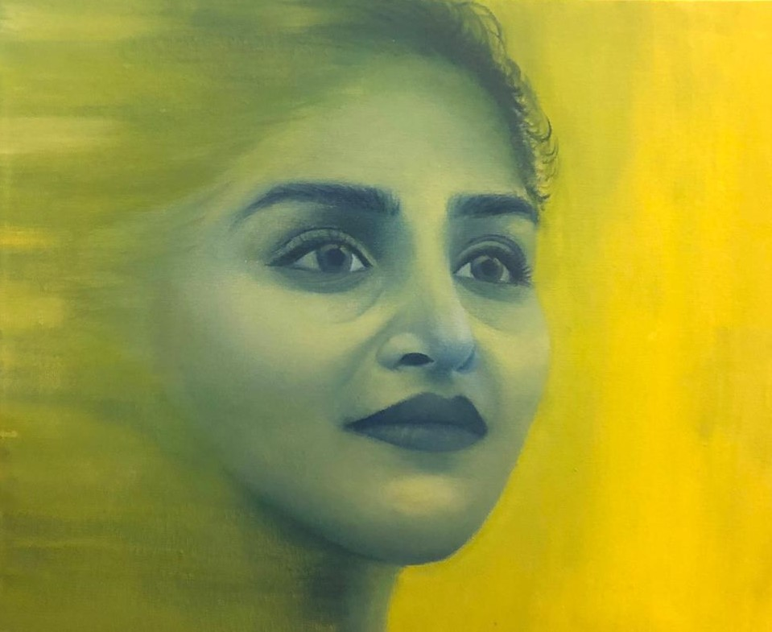 |
Abstract Self Potrait This is another self potrait but an abstracted one. For this piece, I used blue, yellow and, white oil colors on a 16x20 canvas. |
| 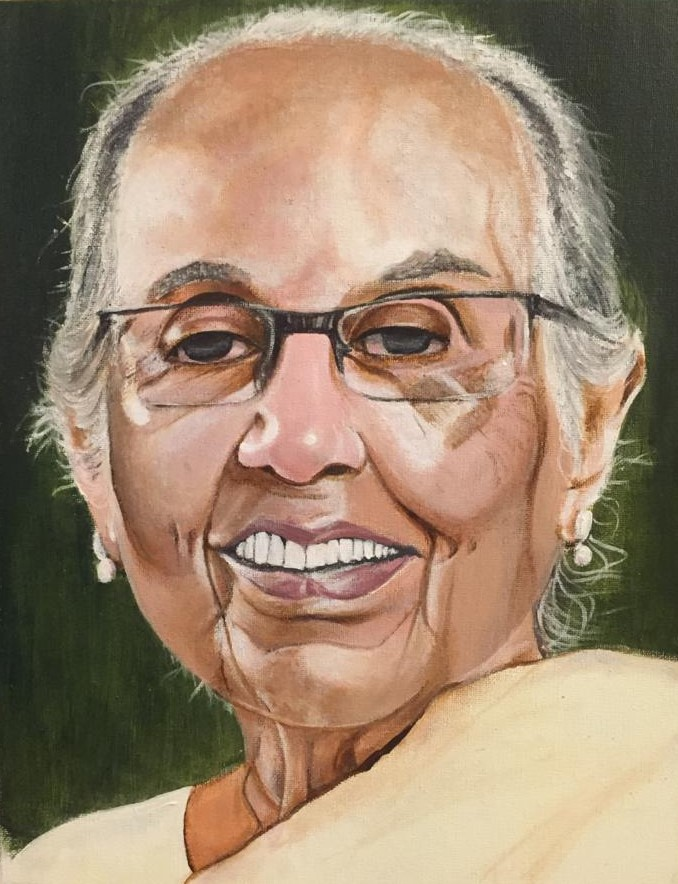 |
Old Lady Potrait This potrait of an old woman was made on a 9x12 canvas using a heavy application of acrylic paints. |
| 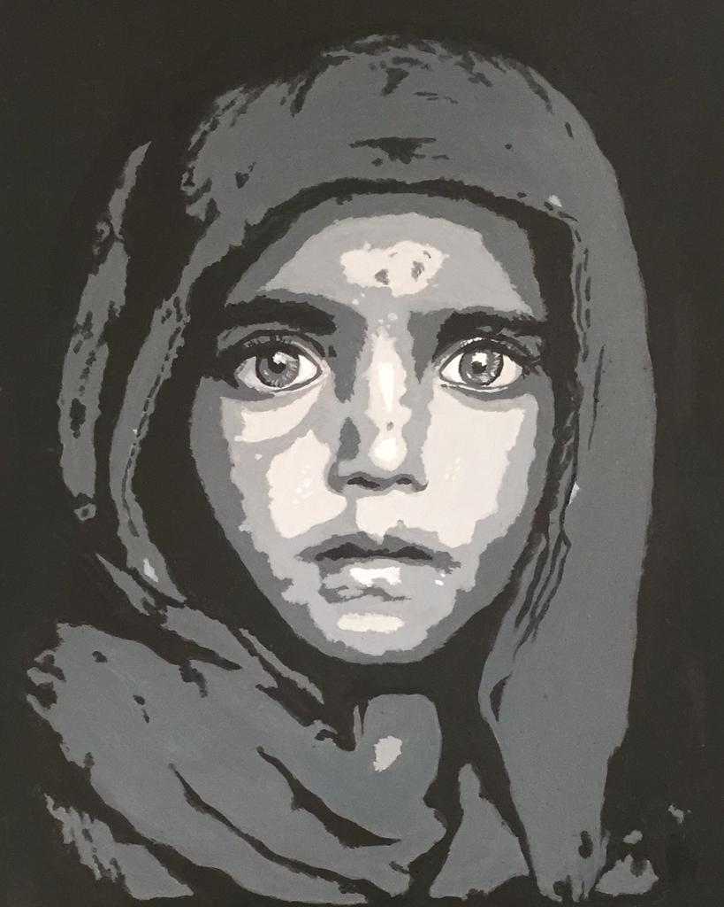 |
Value Potrait This is a value potrait of a young girl that I made using oil paints on a 9x12 vellum board. For this painting, I started off with black color, gradually adding white paint inorder to get the lighter value steps. |
| 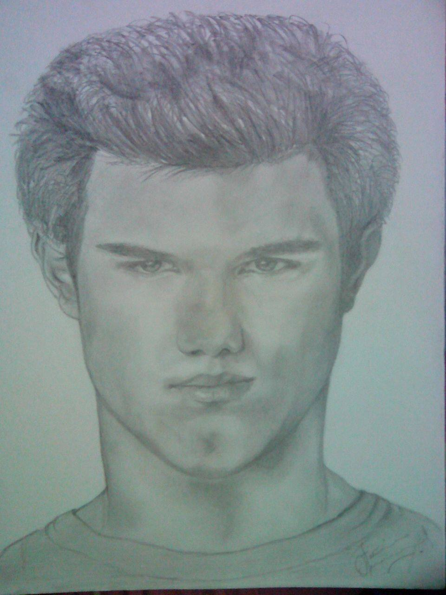 |
Taylor Lautner This is a pencil sketch of the infamous, Taylor Lautner. |
| 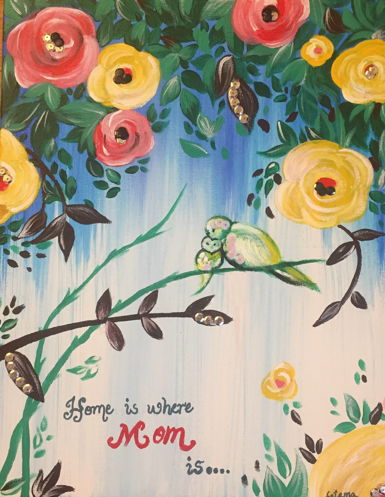 |
Mother's Day I dedicated this painting to my mother on Mother's day. It displays love and affection between a mother and a daughter. I used acrylic colors on a 9x12 canvas. |
| 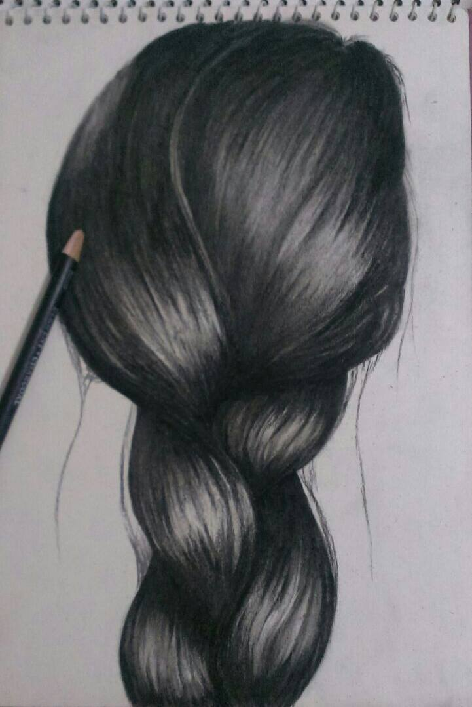 |
Braided Hair This sketch of braided hair is created using a charcoal pencil on a vellum board. |
| 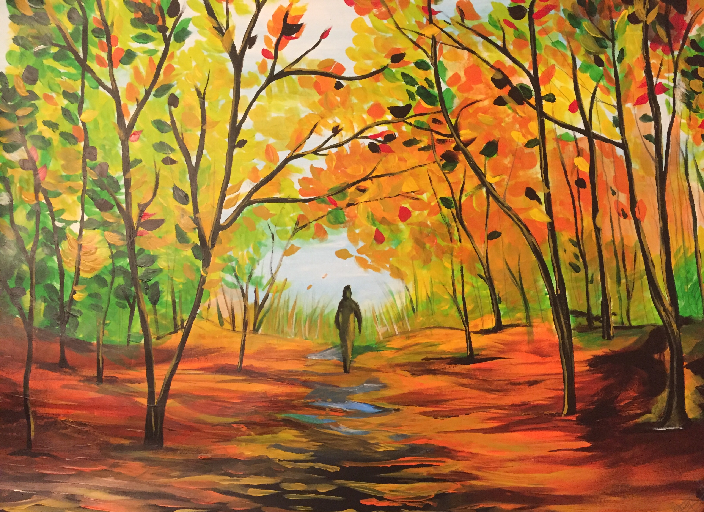 |
The Fall This painting displays different colors of fall. I made it using acrylic paints on a vellum board. |
| 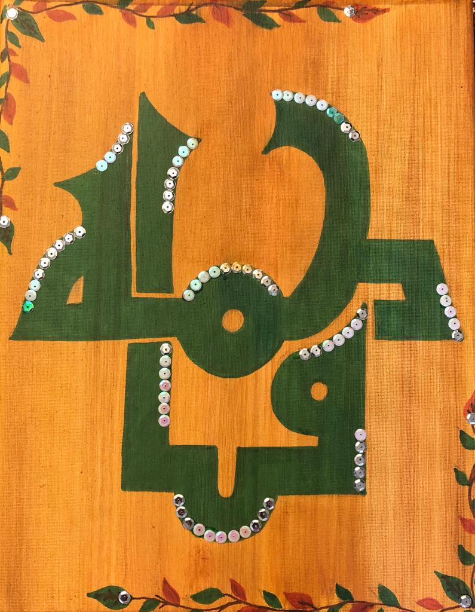 |
Calligraphy This is a calligraphy of my name in Arabic. I created it using Crayolla marker pens and acrylic paints on a 9x12 canvas./p> |
| 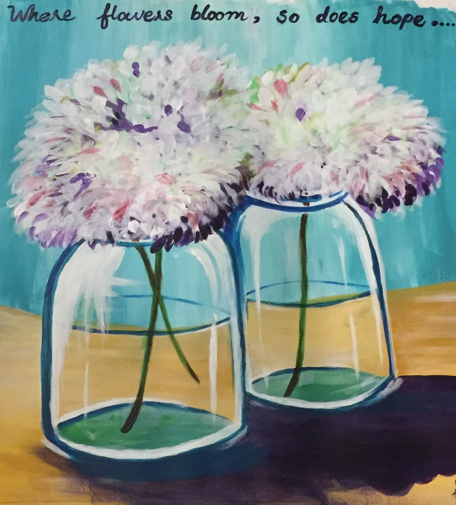 |
Vases of Hope This painting was created using acrylic paints on a vellum board. It symbolizes hope. |
|
Charcoal Potrait This is a potrait of a man made using charcoal pens and pencils. |
|
| 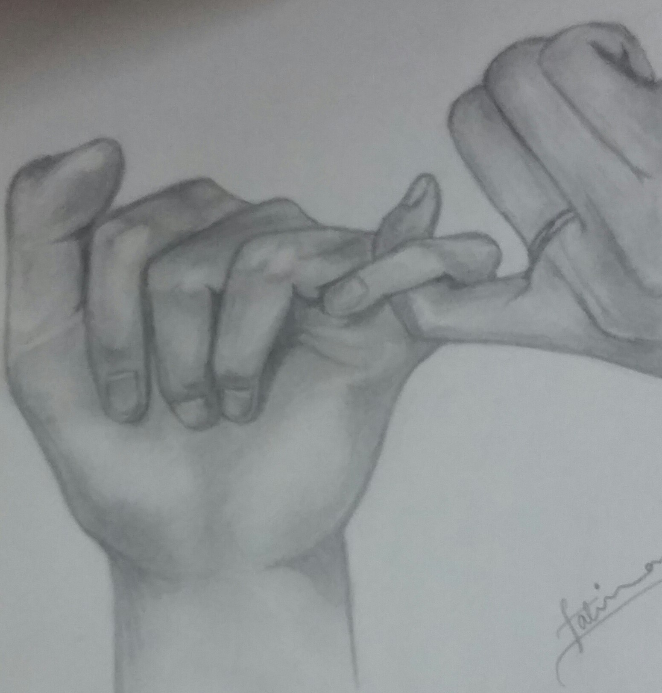 |
The Promise This is a pencil sketch of two hands making a promise. I made it using a graphite pencil on a vellum board. |